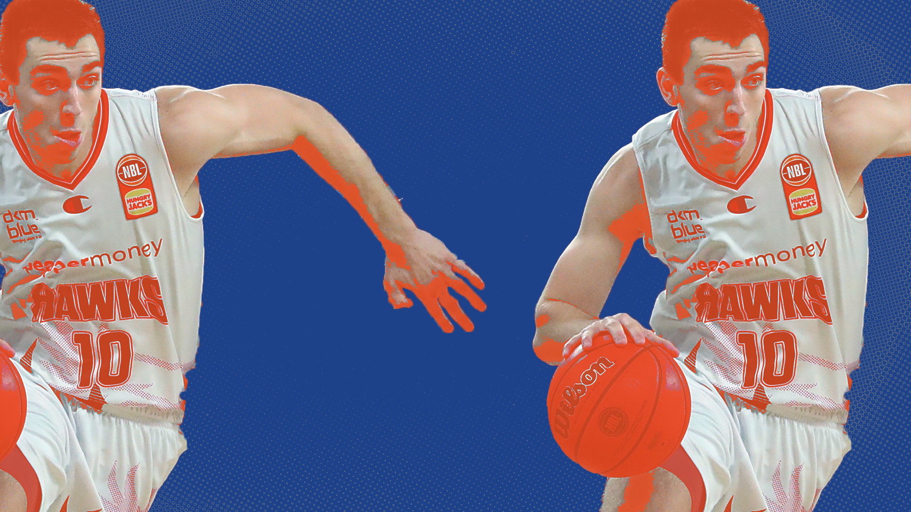

Justinian Jessup is carving a new path to the NBA
The NBL and it's Next Stars program is proving, with Jessup, that it's committed to development.
Sean Carroll illustration
Justinian Jessup is the most interesting prospect in the NBL right now. He might be the most interesting prospect in the NBL ever, and the why will become clear.
In any case, as the NBL draws more eyeballs and enjoys increased global relevance, more people will see Jessup and see why this might be the case.
As it stands, the NBL might be the best league in the world for developing talent, and that doesn’t feel like too controversial an opinion - the growth that players like LaMelo Ball, Josh Giddey and Jae’Sean Tate experienced is provable and observable when watching them in the NBA today. LaMelo was drafted third, probably should’ve been first and won Rookie of the Year. Giddey’s receiving similar shouts this year. Jae’Sean Tate went undrafted, then to Antwerp, and is now a key piece within the Houston Rockets infrastructure. Provable!
What Giddey and Ball have in common is that they were both ball-dominant lead playmakers playing with a vested interest in raising their draft stock. They didn’t need to win, they just needed to play well, and that shows - in LaMelo’s one NBL season the Illawarra Hawks went 5-23. He averaged 17/7/7 with 16.7 field goal attempts per game and 2.5 turnovers. Giddey’s Adelaide 36ers were 13-23, averaging 11/7/7 with 3.3 turnovers. Good numbers, bad results for the team.
What does any of that have to do with Justinian Jessup? Who is Justinian Jessup? Both are good questions
The Golden State Warriors had two second-round picks in the 2020 draft. They took Nico Mannion 48 th and Jessup 51 st , sending Jessup to the Hawks on a two-year draft and stash. One year in, Jessup is the subject of this article and Mannion is no longer an NBA player, but I digress. At the core of the comparison is that these players, taken three picks apart, have had and are likely to have completely different career trajectories on account of one being stashed in the NBL.
Jessup isn’t better than Giddey or Ball, he probably doesn’t have a higher upside than even Ousmane Dieng (a Future Stars prospect playing with the NZ Breakers), but I firmly believe he’s the most interesting prospect because his path isn’t one we’ve seen in the NBL. He’s already been drafted, so Jessup’s best asset is showing the Golden State Warriors, the team with the NBA’s best record as we speak, that he can contribute to winning. He doesn’t need to stuff the stat sheet like Ball or Giddey because that’s not what his NBA team needs from him. He’s interesting because of what he represents.
He averaged 30 minutes and 13 points last season playing as a two guard, featuring in 35 of Illawarra’s 36 games as they went 20-16. That’s the very same Illawarra who were the worst team in the NBL in LaMelo’s only season there, which was the one immediately prior. Jessup averaged 12.4 points in NBA Summer League, shooting 43 percent from deep against NBA rather than NBL opposition - though primarily players in similar situations rather than starters - and he’s continued that run of form into the nascent 2022 NBL season. Through nine games he’s up to almost 14 points in 31 minutes a night, all while maintaining his 43 percent from deep and hitting two threes a game. He’s continued to be important to the 5-4 Hawks, who are among the betting favourites to take the NBL this season.
In his own words, what the NBL has done for Jessup is prepare him physically.
“It was a really physical league [the NBL]. Just the way it’s officiated they let a lot of stuff go and I think that’s going to be beneficial moving forward, even in Summer League. Playing in the NBL helped me with that. They play more physically, so that’s probably the most significant thing, basketball-wise.”
That’s one of the things you notice with NBL players moving into the NBA - the league is more physical and, as a result, a league that isn’t quite that can seem easier - if you play with the knowledge that you can play through contact, as Jessup can, then less contact gives you more room to get off his shots. That sentiment has been echoed by Warriors GM Bob Myers, who said just before Summer League:
“Right now, his best skill is shooting. And he's pretty big. To shoot at that size as well as he does - he's a knock-down shooter.”
Watching where Jessup has gone and where he may go is what makes his story so compelling. Last season he was a key component of the Hawks’ offence and this season even more so, showcasing the growth and ability to play in a team context that will be so valuable to the Warriors.
In a derby clash against traditional NBL powerhouse the Sydney Kings on January 13th, Jessup was quiet in a conventional box score sense and loud in a game sense. Did he, in a traditional sense, ‘do’ much? No. But he started every quarter, closed the third when Sydney took the lead back, and played the entire fourth as Illawarra held Sydney to 11 (!) points in the final term in an eight-point win. He’s clearly valuable to the team, but why?
This isn’t an exhaustive list of all of his contributions on defence in the first half, but watching the game through the lens of exclusively watching Jessup shows you he’s got some weird gravity going on. In the first quarter, he contested a missed three, fouled as the help man on a contested layup, and forced a misplay on his man that led to a layup. In the second, he was the help man defending a successful layup, left his man to contest a layup and left the man for an open three, and got lost on an island trying to mark two men that led to a three.
The peculiarities of watching Jessup in this way is that it felt like the game was often 4-4 on offense and 4-4.5 on defence. He wasn’t given many opportunities to shoot, going 2-6 on season-low efficiency, but his corner or wing threat meant that Sydney had to dedicate a man to him regardless, which created more space for someone like Sam Froling to get into the paint. On defence, many of his plays were as a secondary defender, leaving his man on the wing to contest shots inside, to mixed effect. There were times when he looked caught between two poles, and a degree of decisiveness would help him going forward.
The highlight play occurred at the start of the third quarter, where he rolled off a screen set by Froling at pace, drove towards the basket, and flung a one-armed pass back to an open Froling, who sunk an uncontested three. It feels important that it’s the only one he made all night. It’s a play that indicates he’s got more to play with than just the catch and shoot essentials, and a key facet of an all round game where he went for 5 points, 5 boards and 3 assists with a block.
What does this mean for anyone, going forward? The NBL, the NBA, Jessup, Golden State, whomstever? The more players like Jessup can act as a case study for the NBL measurably improving players - especially within a scheme, rather than as a ball-dominant player - the more they’ll send them over here. Ousmane Dieng, already with the Breakers, could be a 2022 or 2023 draft pickup depending on who you talk to. Jessup’s growth might convince NBA execs that Dieng is worth picking up this year, keeping in NZ for a season, and bringing him back after another year of growth. Jessup is proof of concept for this approach’s payoff.
Going from 51st , a pick that is by no means a guarantee that you’ll ever play for the team - the Warriors, no less - to an NBL all-rookie nominee, guaranteed starter, and potential rotation option when he goes back to Golden State is exactly that proof of concept. Jessup, but more what he could (and currently does) represent, is what makes him the NBL’s most interesting player and one who’s flying well under the radar this season.